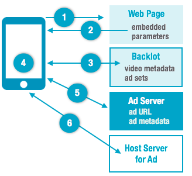

Note: You can use only one ad plugin per Ooyala player, including My Ads. Serving ads from multiple ad plugins within the same Ooyala player is not a supported player configuration.
To deliver ads during playback, use any of the ad plugins that integrate with
Player V4. To deliver My Ads from Backlot, see
Delivering My Ads instead.
Run-time Playback Ad Flow for Ad Plugins

- When the HTML page is opened, the Ooyala player is created and loads.
- The player reads in all embedded parameters on the page.
- The player obtains from Backlot any metadata about the video and any ad sets, if
defined.
- The player starts playing the video.
- During playback, if a cue point is reached (for example, for a pre-roll,
mid-roll, or post-roll ad), the player obtains information about the ad or
overlay (such as the URL where it's hosted, and other metadata) from the
applicable ad server.
- The player pulls the ad or overlay from the specified URL, and then plays the
ad.
Ads and Firefox Private Browsing
For
consumers using
Private Browsing windows in Firefox, some ads may fail to load because
privacy mode blocks certain kinds of tracking URLs.